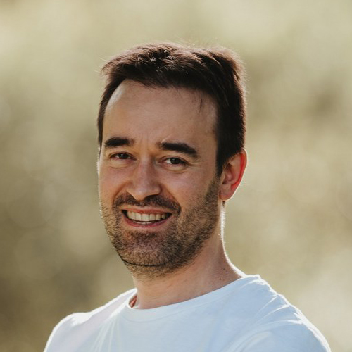
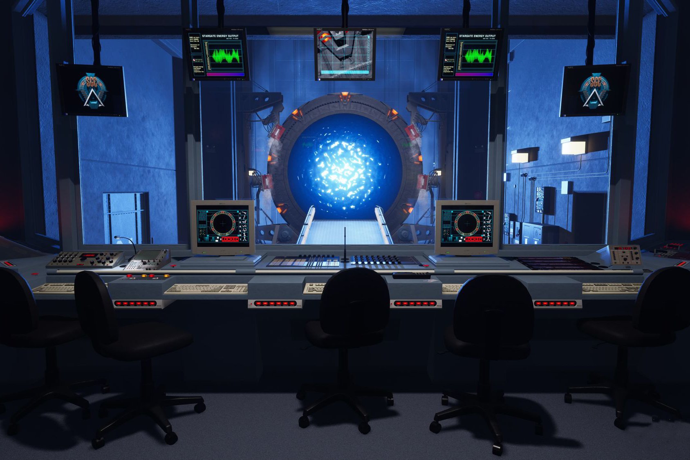
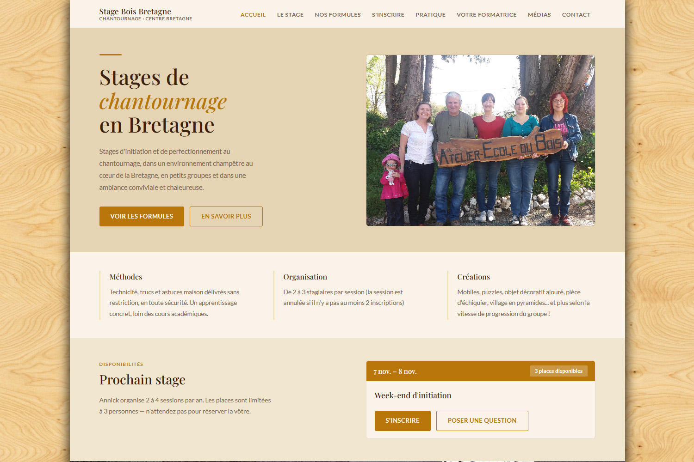
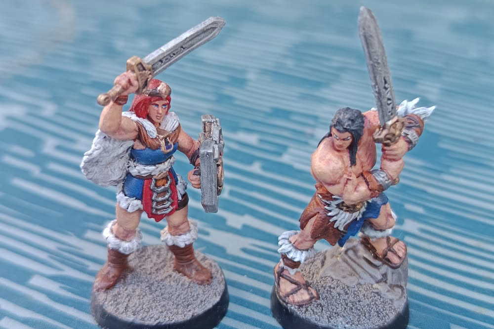

Master Informatique (M1 TIIL-A / M2 ILIADE)
Université de Bretagne Occidentale (UBO) – Brest
J’y approfondis l’ingénierie logicielle : architecture avancée, génie logiciel, tests et intégration continue.
Recherche un stage de fin d’études (M2 ILIADE – UBO)
Région brestoise (Finistère)
Développeur logiciel, fort de plusieurs années d’expérience chez Arkéa, Orange et Thales.
J’ai repris mes études en Master 2 Informatique (ILIADE à l’UBO) et je recherche un stage de fin d'études à partir d'avril 2027 pour une durée de 4 à 6 mois.

Après plusieurs années d’expérience chez Thales, Sopra Steria, Orange et Arkéa, j’ai repris mes études en informatique à l’UBO. Je m’intéresse aux différentes étapes du développement logiciel — conception, développement backend et frontend, tests, CI/CD et administration système — ainsi qu’à l’intelligence artificielle, au cœur de mon UE de Mise en Pratique Accompagnée en master.
Université de Bretagne Occidentale (UBO) – Brest
J’y approfondis l’ingénierie logicielle : architecture avancée, génie logiciel, tests et intégration continue.
AFPA de Langueux
J’y ai étudié l’administration de serveurs Linux et Windows, l’architecture réseau, le routage, le filtrage et la sécurité de parc.
AFPA de Langueux
J’y ai acquis les fondamentaux de l’algorithmique, de la programmation orientée objet, des bases de données relationnelles et du développement applicatif.
Parcours en entreprise
Missions menées en ESN et auprès de grands comptes des secteurs industriel et télécom.
Thales DMS – Brest
Orange (via Sopra Steria) – Rennes / télétravail
Crédit Mutuel Arkéa (via Sopra Steria) – Guipavas
Crédit Mutuel Arkéa (via Sodifrance) – Le Relecq-Kerhuon
Initiatives Formation – Finistère (4 sites)
Amouest Numérique – Rostrenen
Autoentrepreneur – Trébrivan
Je les ai classées par domaines d’expertise, à partir de mon parcours académique et professionnel.
Réalisations

J’ai présenté le projet lors de conventions à l'international
Projet associatif & jeu vidéo 3D (2007 – 2020)
J’ai fondé Stargate Network, puis ai fédéré une équipe de bénévoles passionnés autour de ce projet ambitieux de simulation interactive. Il s’agit d’un jeu vidéo non officiel qui simule le fonctionnement de la Porte des étoiles et permet de voyager et d’explorer des planètes ainsi que des lieux emblématiques de la franchise Stargate, comme le Stargate Command (SGC) et Abydos.
En tant que président fondateur de l’association, j’ai assuré la gestion du projet et le game design.
J’ai assuré seul le développement des versions 1.0 (Java/Flash) à 2.3 (UDK), puis recruté des ingénieurs pour poursuivre le développement en équipe à partir de la v4. J’ai également reproduit en 2D les interfaces des programmes du SGC et les ai transposées dans Unreal Engine avec Scaleform GFx.
Pour la version 2D, j’ai réalisé toutes les illustrations en vectoriel avec Flash.
Pour la version 3D, j’ai modélisé au millimètre près, à partir des plans officiels de la série, toute l’architecture du SGC (salles, couloirs, portes et escaliers), son support et sa rampe, ainsi que des éléments de décor : bureau et mobilier du général Hammond, boîtiers d’alarme incendie... Pour retrouver les références exactes de chaque élément, j’ai effectué un important travail d’archivage et de recherche documentaire.
Projet mené en trinôme sur 14 heures de TP et 2 week-ends : j’ai pris en charge l’architecture et l’écriture des scripts de la simulation, ainsi que le modèle 3D et texture de la ruchette d’observation Dadant un cadre. Apiculteur amateur depuis l'adolescence, j’ai veillé à ce que les comportements simulés restent fidèles à ce qu’on observe dans une vraie ruche.
Support de soutenance Télécharger la simulationProjet de Master 2 ILIADE, UE Systèmes Multi-Agents (UBO, 2026)
Comment une colonie d’abeilles finit-elle par concentrer ses butineuses sur les meilleures fleurs, alors qu’aucune abeille ne connaît l’ensemble du terrain ? C’est la question de départ de ce projet, dont le seul impératif était de concevoir une simulation multi-agents comportant au moins une boucle de rétroaction.
Chaque ouvrière est un agent autonome piloté par sa propre machine à états hiérarchique (patron State, une classe GDScript par état). Elle ne perçoit que ce qui l’entoure : les fleurs, détectées par leur angle apparent, et les danseuses proches dans la ruche. Une recrue ne reçoit de la danse qu’une direction et une distance approximatives, puis doit chercher la source sur place.
Le comportement collectif n’est codé nulle part : il émerge du recrutement par la danse, freiné par l’épuisement des fleurs, la saturation de la ruche, que régule la danse trémulante, et la concurrence entre sources. Un panneau de statistiques vérifie que les réserves de la colonie suivent le classement attendu des massifs, d’une simulation à l’autre.

J’ai conçu, développé et mis en ligne un site vitrine et d’information pour des stages d’artisanat du bois (chantournage) en Bretagne, avec une intégration responsive. Un backend léger permet à la propriétaire d’administrer le site et de gérer les dates de formation. J’ai aussi mis en place une chaîne CI/CD avec GitHub Actions : à chaque push sur la branche main, elle construit les images Docker du frontend et du backend, les publie sur GitHub Container Registry, puis déploie automatiquement la nouvelle version sur mon VPS via SSH. Une notification par e-mail est envoyée après chaque déploiement réussi.
Création & loisirs
J’applique à ces pratiques la même rigueur, la même patience et le même sens du détail qu’en ingénierie logicielle.
J’ai appris la harpe auprès d’artistes tels que Hoëla Barbedette, Myrdhin et Elisa Vellia. Je joue sur des cordes en nylon et en bronze, avec les ongles. Je me suis également produit lors de concerts et joué dans plusieurs formations, dont l’ensemble de musique irlandaise de l’école de musique de Carhaix, avec Patrick Molard, et Les Córór de Noetaéy, avec qui j’ai enregistré un CD. Je donne maintenant des cours particuliers.
Chaîne YouTube (@Meardon22)Je modélise des objets et des environnements avec 3ds Max avant de les texturer avec Substance Painter, en recherchant la précision, la fidélité de reproduction et l’optimisation technique des maillages.
Portfolio ArtStation
Je peins des figurines au pinceau et maîtrise différentes techniques : lavis, éclaircissement, brossage à sec, glacis, dégradé et surlignage. Je les utilise ensuite lors de parties de jeux de rôle que j’anime comme maître du jeu. Cette pratique mobilise mon sens du détail et ma minutie.
Patience & travail de haute finition
Disponible pour un stage de fin d’études M2
Je suis à votre disposition pour échanger sur vos projets logiciels, DevOps ou infrastructure.